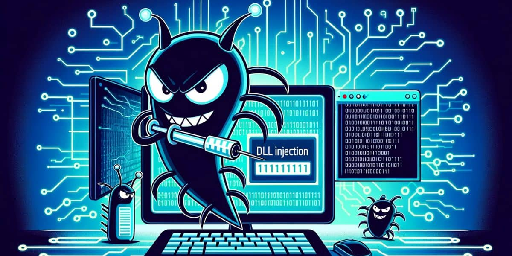

Introduction
DLLs (Dynamic Link Libraries) are essential components in software development, especially in Windows environments, as they allow the sharing of code and data among multiple programs, promoting modularity and code reuse. They save disk space and memory and facilitate software maintenance and updates. However, this same flexibility can be exploited by malware creators, who use DLLs to execute malicious code without the user's knowledge, infiltrating systems, stealing data, and maintaining persistent access to compromised networks.
How a DLL Works
DLLs (Dynamic Link Libraries) are designed to allow multiple programs to share common functionalities, promoting software modularity and efficiency. They contain executable code, resources, and data that can be accessed by various programs simultaneously. When a program needs a specific function or resource residing in a DLL, it makes a call to this library, loading it into memory only once, even if multiple programs use it. This saves system resources and reduces redundancy.
Structure and Functioning
A DLL is similar to an executable (EXE) but cannot be run directly. Instead, it is loaded and used by other executables or DLLs. It has an export table, which lists all the functions and resources available to other programs, and an import table, which specifies which functions and resources from other DLLs or executables it utilizes.

The image above illustrates how a DLL (Dynamic Link Library) works:
ㅤ- Programs: There are two programs depicted (Program 1 and Program 2) that require specific functionalities.
ㅤ- DLL: The DLL itself contains executable code, resources, and data that are shared among multiple programs.
ㅤ- Arrows: These arrows signify that both programs make calls to the DLL in order to utilize its functionalities.
ㅤ- Export Table: This table lists all the functions and resources that are available for other programs to use.
ㅤ- Import Table: This table specifies which functions and resources from other DLLs or executables the current DLL utilizes.
Types Of Malware DLL
DLL Hijacking
DLL Hijacking is an attack where an attacker replaces a legitimate DLL with a malicious version. This attack exploits the way programs search for and load the necessary DLLs. Typically, programs first look for DLLs in the current working directory before checking system directories. An attacker can place a malicious DLL with the same name as the legitimate DLL in the directory where the program is executed. When the program attempts to load the DLL, it loads the malicious version, allowing the attacker to execute malicious code in the context of the target program, potentially gaining control of the system.
DLL Injection
DLL Injection is a technique where malware injects a malicious DLL into a running legitimate process. This attack allows the malicious code to execute within the memory space of a trusted process, helping it evade detection by security software. There are several techniques for DLL injection, including using Windows functions like CreateRemoteThread and LoadLibrary. Once injected, the malicious DLL can manipulate the host process to perform unauthorized actions such as capturing keyboard inputs, exfiltrating data, or even downloading and executing other malware.
DLL Overloading
DLL Overloading involves replacing or modifying functions within an existing DLL to execute malicious actions. Instead of replacing an entire DLL, the attacker alters specific functions to carry out malicious activities while maintaining the legitimate functionalities of the DLL. This can be done by directly modifying the DLL on the disk or injecting malicious code into specific functions during execution. DLL Overloading can be used to intercept and modify function calls, capture sensitive data, or change the behavior of a program to benefit the attacker.